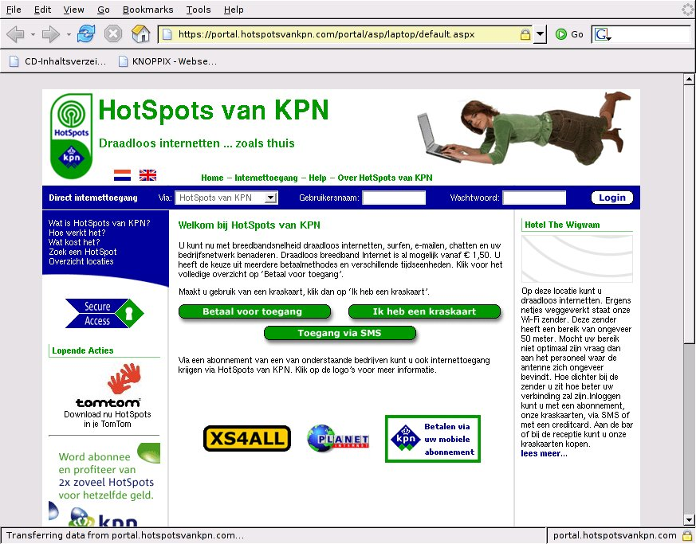
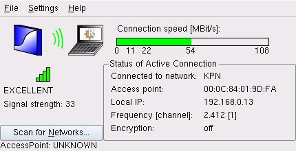
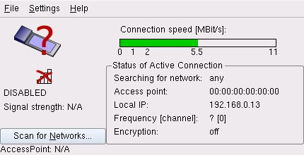
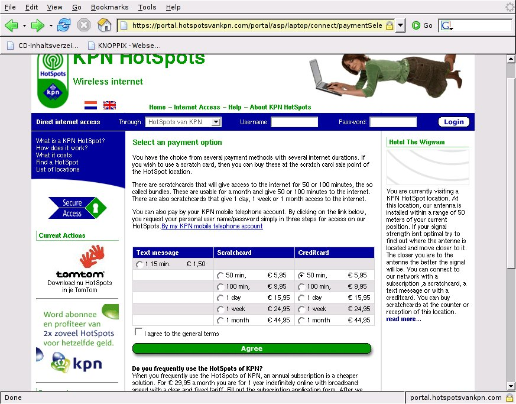
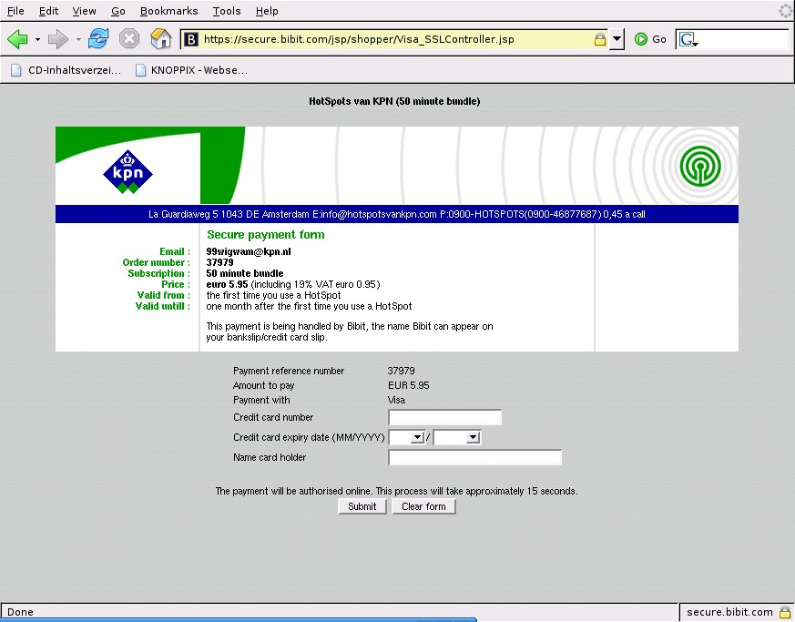
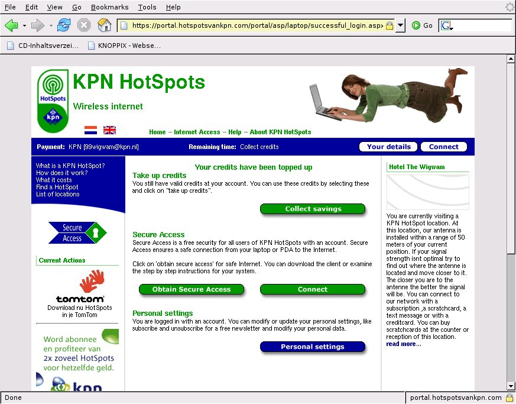
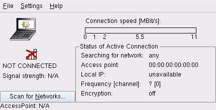

With Knoppix at a HotSpot
By Edgar Howell
Recently, my wife and I spent a week in a hotel on the Dutch coast, and when we weren't out walking on the beach or riding on one of a near-infinity of bicycle paths, I was using a laptop to try to catch up on some reading. By a fortunate (???) coincidence, I failed to take the mouse along and was forced to use the idiotic touch-pad: apparently designed for the Wimp/OS world, it likes to trigger "events" at random intervals, perhaps at transition from one window to another. In any case, suddenly I was confronted with the following:
Wait a minute - my wife can get by in Dutch, but mine is terrible! I don't have anything in Dutch on this machine... What is going on here?
Well, my Dutch may be bad, but this wasn't too hard to decipher: apparently, the Dutch have a verb that means "to use the Internet", and the 2nd line translates as "use the Internet wirelessly ... as if at home" - and the green heading in the right-most column refers to the hotel where we were staying.
Guess what that means? They have a hot spot - and Knoppix found it without my even asking!
So I made things a bit easier on myself by clicking on the British flag:

When I showed this to my wife, her first question was: can we check on e-mail? Well - sure, why not?
Cautious as I am, though, I wanted to first test the water before jumping in. Under Knoppix, the Panel next to the "K" for KDE has a Tux icon; clicking there, then "Network/Internet" and "KWiFIManager (Wireless LAN Manager)" provided the following information:
Wow! Since Knoppix started DHCP at boot time, it had already obtained an IP-address. I had no idea this was going on. Klaus, you are so cool!
Clicking "File" and then "Disable Radio" was the emergency brake I wanted.
Now that I knew that I wasn't going to turn into the Sorcerer's Apprentice, the ice didn't seem quite as thin as it had a few moments earlier. After all, if it is necessary to pay for a block of time up front, I didn't want to waste any of it.
Something like $7 for 50 minutes isn't exactly cheap, but under the circumstances, it didn't seem unreasonable. More than enough time to check on e-mail a couple of times while we are here, and maybe even surf a bit.
After entering a user name and password as well as a valid e-mail address, it was time to provide a credit card number.
After that, it was just a matter of starting a browser and entering a URL. This initiated contact with the provider requiring a log in, which then provided a couple of options (which I didn't investigate) prior to actually connecting and starting the clock.
Real road warriors certainly don't worry about minor details such as cost: like E.T., they just want to get back in touch. But when you are on vacation and have to pick up the tab yourself, you might not consider the hotel WLAN. I certainly will in the future.
The great advantage for us Linux users is that Knoppix is quite happy to run without access to a hard drive. I didn't have to worry about anything evil. The one or two things that I found important enough to keep, I just wrote to a USB stick. Neat. Clean. No problem.
Do note, however, that my Knoppix 3.4 CD does not seem to support WLAN - at least I didn't find anything like it. Since 5.0 is now out (Mid-May 2006), there is little incentive to want an earlier version on a notebook anyway.
Pure conjecture on my part: this notebook has the Intel Centrino (TM) label and the provider at the hotel, KPN, displayed it as well. Apparently Linux supports this hardware configuration well.
For what it is worth, I sacrificed a SuSE partition and went on-line after booting it ("sacrificed" since it required access to the hard drive and I will now re-format that partition as potentially contaminated). It wasn't particularly difficult to figure out how to do this under SuSE as well.
I haven't been able to replicate this since returning home, but that certainly is just due to the absence of a hot spot in the vicinity. Here, Knoppix shows the following:
This was my very first encounter with WLAN and may not be typical of other providers.
While I would expect a somewhat similar scenario from other providers, perhaps the Dutch are just very good at making it easy on newbies.
[ I do a lot of travelling, and connect to a wide variety of strange WLANs. In my experience, at least, connecting to a wireless LAN with Linux is usually just as simple as Edgar describes. -- Ben ]
Still, it would seem that WLAN access is no longer just for high-tech road warriors. While it's not something I'd do in an airport somewhere waiting for a connecting flight, I definitely will be looking for connectivity in any hotel where a stay of several days is involved.
That will be a major improvement over dragging myself to the hotel lobby, checking in with some sleepy clerk, and getting stuck using some outdated OS that keeps getting in my way - and may even retain things I don't want kept in spite of my clearing the history before leaving the browser and logging off. Knoppix to the rescue!
Talkback: Discuss this article with The Answer Gang
(Note: mail that does not contain "linuxgazette" in the subject will be
rejected.)
![[BIO]](../gx/2002/note.png) Edgar is a consultant in the Cologne/Bonn area in Germany.
His day job involves helping a customer with payroll, maintaining
ancient IBM Assembler programs, some occasional COBOL, and
otherwise using QMF, PL/1 and DB/2 under MVS.
Edgar is a consultant in the Cologne/Bonn area in Germany.
His day job involves helping a customer with payroll, maintaining
ancient IBM Assembler programs, some occasional COBOL, and
otherwise using QMF, PL/1 and DB/2 under MVS.